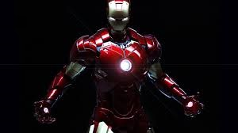
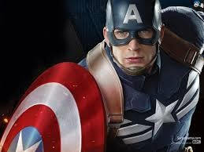

Mavel Cinematic Universe
The Marvel Cinematic Universe (MCU) is an American media franchise and shared fictional universe that is centered on a series of superhero films, independently produced by Marvel Studios and based on characters that appear in publications by Marvel Comics. The franchise has expanded to include comic books, short films, and television series. The shared universe, much like the original Marvel Universe in comic books, was established by crossing over common plot elements, settings, cast, and characters. Clark Gregg has appeared the most in the franchise, portraying Phil Coulson, a character original to the MCU.
The first film released in the MCU was Iron Man (2008), which began the first phase of films, culminating in Marvel's The Avengers (2012). "Phase Two" began with Iron Man 3 (2013), and concluded with Ant-Man (2015) . Marvel is also preparing "Phase Three", beginning with the release of Captain America: Civil War (2016). The universe began to expand with the release of the first official tie-in comics in 2010, and saw further expansion with the Marvel One-Shots direct-to-video short films in 2011 and the television series Marvel's Agents of S.H.I.E.L.D. in the 2013-14 television season from Marvel Television. Marvel has multiple films and television projects in various stages of development.
The franchise ranks as the highest-grossing film franchise both in the United States and worldwide, and has inspired other film studios with comic book character film rights to attempt to create similar shared universes.